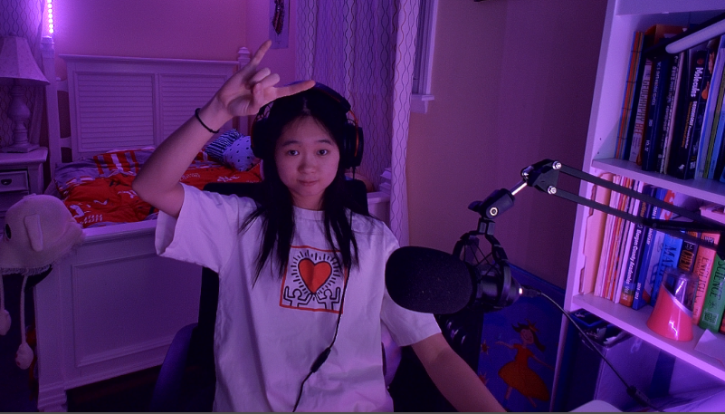

Hi, my name is Alice
Hi! I’m Alice, a first year student at Carnegie Mellon University studying Information Systems with a minor in Music Technology. I was born and raised in Houston, Texas, so I visited the NASA Johnson Space center there many times and fell in love with space and technology. After 5th grade I moved to New Jersey in which I now take visits to Flushing for food or Manhattan for the skyline.
My interest in programming started from coding Lego robotics and developing games using Scratch in elementary school. From there, I have programmed autonomous trajectories and computer vision pipelines for robots, created games in Unity, and developed full-stack web applications. Along the way, I have also picked up soft skills such as communication, cross-team collaboration, and more. Aside from software development, many of my hobbies lie at the intersection between technology and art: theater tech (audio engineering and lighting design), building custom mechanical keyboards, songwriting/music production, etc.